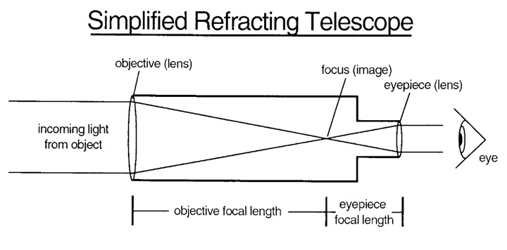
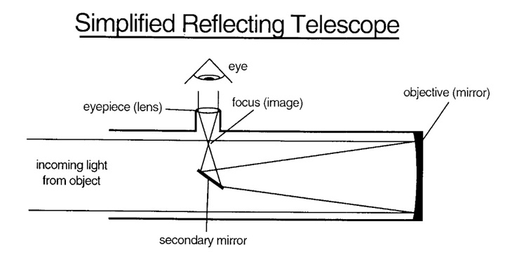
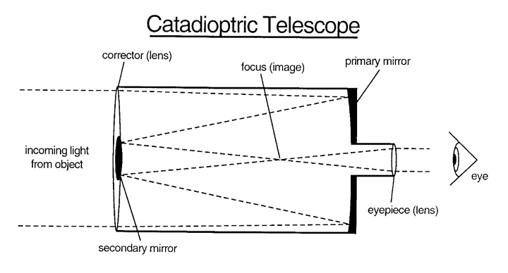

telescopes
Refractor Telescopes
Refractor Telescopes Refractor Telescopes utilize specially designed lenses to focus incoming light into an image for you to see with your eye or capture with a telescope camera. They are usually long relative to their overall size, as light must flow in a straight path through the telescope tube to the eyepiece or camera. The larger the lenses in a refracting telescope, the longer the optical tube has to be to bring the image into focus. The length and size of the lens of a refractor, combined with the fact that large lenses can be difficult and expensive for glassmakers to manufacture with high quality and accuracy, means that larger refractors can get rather expensive. Most refractors available for purchase tend to be smaller than other types of telescopes, making refractors one of the most portable types of telescopes on the market. Depending on the type of telescope lenses used for the optics, you may encounter visible color fringing at high magnifications. Also known as chromatic aberration, color fringing is when the various colored wavelengths of light get split from each other and arrive at slightly different angles, showing up as an image with distinct coloration at the edges. Most low-cost refractors are “doublets,” which may have color fringing, whereas “triplet” refractors are designed to eliminate this issue. Still, whether a doublet or triplet, refractors are a solidly built type of telescope. Their non-movable lenses make for a sturdy design that doesn’t need much maintenance beyond the occasional cleaning. It's also one of the most popular types of telescopes available today.
Reflector Telescopes
Reflectors use mirrors, which causes light to reflect at various angles within the optical tube, extending the overall light path. This often causes reflectors to be shorter than refractors of the same aperture, as the light doesn’t need to flow in a straight line to move the same distance. Given that manufacturing large mirrors is often cheaper than manufacturing large lenses, it’s fairly common for reflectors to be much less expensive type of telescope, when compared to refractor telescopes. Additionally, reflectors are not susceptible to color fringing in the same way that doublet refractors are.
Catadioptric Telescopes
Catadioptrics combine the optical benefits of both lenses and mirrors into a compact, convenient package, being smaller and more portable than either refractors or reflectors of the same aperture. This is made possible by the corrector plate that folds the light path and the curved secondary mirror that magnifies the light internally. There are many variations on this design, including Schmidt-Cassegrains and Maksutov-Cassegrains. Since it uses mirrors much like a reflector, a catadioptric scope will require collimation. However, unlike with reflectors, this procedure needs to be performed far less frequently. If well taken-care of, a compound scope can go for years without requiring collimation. The catadioptrics’ small size and portability give them a convenience not found in reflectors of the same class, making them a great investment for both beginners and experienced astronomers alike
